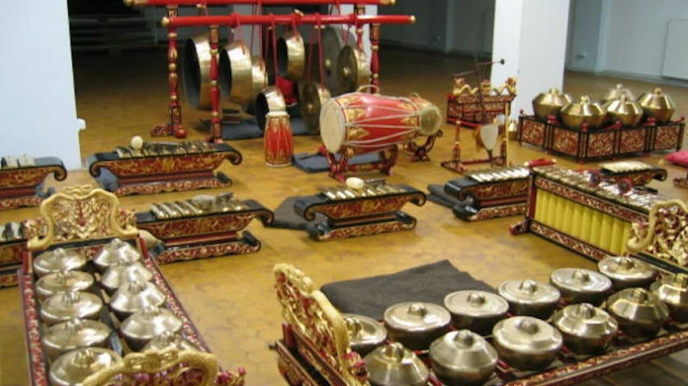

El Bonang.
El bonang es un instrumento musical indonesio utilizado en el gamelan javanés. Es una colección de pequeños gongs (a veces llamados "teteras" o "ollas") colocados horizontalmente sobre cuerdas en un marco de madera (rancak), ya sea de una o dos filas de ancho. Todos los hervidores tienen un jefe central, pero a su alrededor los de tono más bajo tienen una cabeza aplanada, mientras que los más altos tienen un arco.
Cada uno está afinado a un tono específico en la escala apropiada; por lo tanto, hay diferentes bonang para pelog y slendro. Por lo general, se golpean con palos acolchados (tabú). Esto es similar a los otros gongs acunados en el gamelan, el kethuk, kempyang y kenong. Bonang puede estar hecho de bronce forjado, hierro soldado y martillado en frío o una combinación de metales. Además de la forma de los hervidores en forma de gong, los bonang económicos hechos de placas de hierro o latón martillado con salientes elevados se encuentran a menudo en el gamelan de la aldea, en el gamelan al estilo de Surinam y en algunos gamelan estadounidenses. En el gamelan de Java central se utilizan tres tipos de bonang:
- Bonang panerus es el más alto de ellos y usa las teteras más pequeñas. Generalmente cubre dos octavas (a veces más en slendro en instrumentos de estilo solonés), cubriendo aproximadamente el mismo rango que el saron y el pekín combinados. Reproduce los ritmos más rápidos del bonang, ya sea entrelazados o al doble de la velocidad del bonang barung.
- Bonang barung tiene un tono una octava por debajo del bonang panerus, y también generalmente cubre dos octavas, aproximadamente el mismo rango que el demung y saron combinados. Este es uno de los instrumentos más importantes del conjunto, ya que da muchas de las claves a otros jugadores del gamelán.
- Bonang panembung tiene el tono más bajo. Es más común en el gamelan de estilo yogyanés, cubriendo aproximadamente el mismo rango que el slenthem y demung combinados. Cuando está presente en el gamelán de estilo solonés, puede tener solo una fila de seis (slendro) o siete hervidores que suenan en el mismo registro que el slenthem. Está reservado para el repertorio más austero, típicamente tocando una paráfrasis del balungan.
 Las partes interpretadas por bonang barung y bonang panerus son más complejas que muchos instrumentos en el gamelán; por lo tanto, generalmente se considera un instrumento de elaboración. A veces toca melodías basadas en el balungan, aunque generalmente modificadas de forma sencilla. Sin embargo, también puede reproducir patrones más complejos, obtenidos mediante la combinación de patrones barung y panerus, como la alternancia de partes entrelazadas (imbal) y la interpolación de patrones melódicos floridos (sekaran).
El kolenang, un bonang cuya única hilera de hervidores está dispuesta en forma de V o U, es un instrumento melódico líder en el degung de Gamelan de Sundanese.
El bonang es similar al reong balinés y al kulintang de una sola fila del sur de Filipinas y Borneo.
{kind=link}